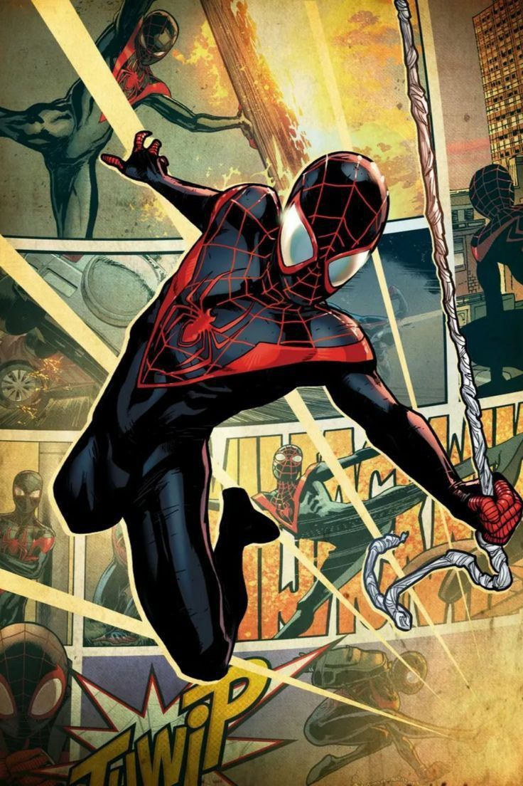

Miles Morales!
totally unrelated sa spiderverse mixed media na pinagsesend ko sau sa ig!! that aside, I think out of all the characters that i thought of, miles did suit u the most!
What I like about Miles is that he isn't that innocent-nerdy type of kid as compared to Peter. He's relatable in a sense that he's that ordinary highschool kid that's socially extroverted and funnily enough, i kinda see him in you! (lowkey alam ko malayo ang reach .) I can't explain it well but somehow his drive to do and fix things better seem reminiscent of you trying to do that now. he's funny and cool but behind his spidey exterior, is a deeply conflicted teenager entangled with his own struggles. the best thing about him? he's actively working to fight thru against that and i'm sure u are doing that too!
though u dont shoot webs or have his spidey-sense, i admit that you've strung my heart with how kind and comforting you can be. and maybe that's your superpower; to form genuine connection with others that's grounded and w/ substance. I don't think I never met someone like you! u are enigmatic; unpredictable in the sense that I didn't expect us talking to happen but I mean it in the most positive way!